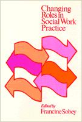

<body bgcolor="#FFFFFF" text="#000000" link="#0000FF" vlink="#CC0000" alink="#CC0000"><center><hr width="350" size="1" align="center" noshade>Various perspectives in the increasingly complex field of social work<hr width="350" size="1" align="center" noshade><p><a href="https://cdcshoppingcart.uchicago.edu/Cart/ChicagoBook.aspx?ISBN=9780877220923&&PRESS=temple" target="_top">Buy this book!</a> | <a href="https://cdcshoppingcart.uchicago.edu/Cart/Cart.aspx?PRESS=temple" target="_top">View Cart</a> | <a href="https://cdcshoppingcart.uchicago.edu/Cart/Cart.aspx?PRESS=temple" target="_top">Check Out</a></p><p></p></center><!--none//--><h1>Changing Roles in Social Work Practice</h1>
<h3>edited by Francine Sobey</h3>
<P>cloth 0-87722-092-1 $17.95, <FONT COLOR=#990033>Out of Print</FONT>
<br>paper 0-87722-096-4 $18.95, <FONT COLOR=#990033>Out of Stock Unavailable</FONT>
<BR> 305 pp
</P><BLOCKQUOTE><I>"This book presents a balanced report of various perspectives in the practice field. It should challenge faculty and students to think and question traditional and alternative approaches to practice."</I>
<br>&#151<b>James T. Decker</b>, San Diego State University<I></I></BLOCKQUOTE>
<p>In recent years, major changes have occurred in all fields of social work practice. Services have been moved out into the community, new and diverse kinds of social workers have been recruited, and new treatments and services have been developed. In short, social work has suddenly become a vastly more complex field.
<p><I>Changing Roles in Social Work Practice</I> is designed to acquaint social work students and professionals with the burgeoning range of career choices. Each of the contributors has both theoretical and practical experience in the area being covered; each offers new insights on how to cope with change&#151not in the abstract, but in real work settings.
<p>The editor's introductory chapter draws together the themes and concepts that characterize current social work; headnotes to each chapter summarize the distinctive features of each service-field.
<BR>&nbsp;<H2>About the Author(s)</H2>
<P><b>Francine Sobey</b>, DSW, is Associate Professor of Social Work Practice, Columbia University School of Social Work, and Social Work Training Consultant. She is also the author of <i>The Nonprofessional Revolution in Social Work</i>.</P>
<BR><H2>Subject Categories</H2>
<p><A HREF="/tempress/political.html" TARGET="_top">Political Science and Public Policy</a>
</p>
<p align="center"><a href="https://cdcshoppingcart.uchicago.edu/Cart/ChicagoBook.aspx?ISBN=9780877220923&&PRESS=temple" target="_top">Buy this book!</a> | <a href="https://cdcshoppingcart.uchicago.edu/Cart/Cart.aspx?PRESS=temple" target="_top">View Cart</a> | <a href="https://cdcshoppingcart.uchicago.edu/Cart/Cart.aspx?PRESS=temple" target="_top">Check Out</a></p><p><font face="Arial" size="1"><a href="copyright.html" onMouseOver="window.status='Web Copyright Policy';return true;" onMouseOut="window.status=''" title="Web Copyright Policy">&copy;</a> 2015 <a href="http://www.temple.edu" target="new" onMouseOver="window.status='Link to Temple University home page';return true;" onMouseOut="window.status=''" title="Link to Temple University home page">Temple University</a>. All Rights Reserved. http://www.temple.edu/tempress/titles/118_reg.html</font></p>